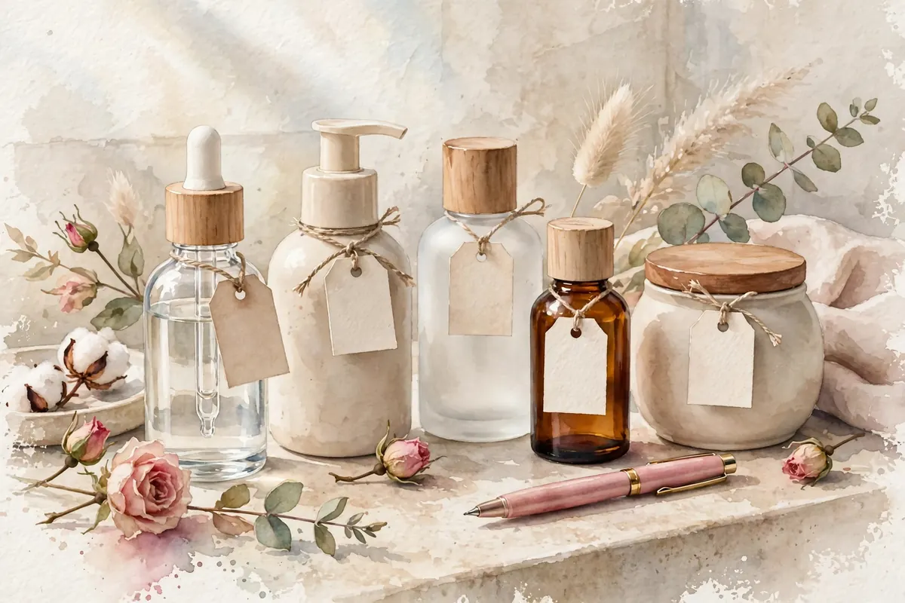

トップ ＞ スキンケア ＞ 開封日を書く習慣：使い始めの記録の付け方
開封日を書く習慣：使い始めの記録の付け方

「これ、いつ開けたんだっけ」。洗面所でそう思った経験は、誰にでもあると思います。開封日を書く習慣は、その疑問をなくす小さな仕組みです。施術の現場では、商材の開封日管理は基本中の基本。自宅のスキンケアにも、そのまま応用できます。
書き方は「容器に直接」が一番続く
記録の方法は、別帳のノートより、容器そのものに書くほうが続きます。底面や側面に、油性ペンで「2026.11.16」のように日付を書くだけです。書きにくい素材の容器には、小さなシールやマスキングテープに書いて貼る方法があります。お風呂場で使うものは、水に強い素材のシールを選ぶと剥がれにくくなります。
書き始めるタイミングは、開封したその場です。「あとで書こう」は、だいたい忘れます。ペンを洗面所の引き出しに常備しておくと、その場で書く流れが作れます。道具の置き場所まで含めて、習慣の設計です。
開封日と一緒に残すと便利な情報
日付に加えて、「朝用」「夜用」などの使い分けや、使い始めたきっかけを一言添えておくと、後で見返したときに状況が思い出せます。複数を並行して使っている場合、どれがいつからなのかが分からなくなりますから、この一言が効いてきます。
スマートフォンのメモに一覧を作る方法もあります。容器に書いた日付を、月ごとに写真で残しておくのも手軽です。大切なのは正確さより、続く形であることです。自分が面倒に感じない方法を選んでください。
記録があると、使い切り計画が立てられる
開封日が分かると、「この容量で何か月使えたか」が蓄積されていきます。次を買うタイミングの判断や、定期購入の間隔の見直しに、そのまま使える数字です。使い切る前に次を開けてしまう、という無駄も減ります。
また、長く開封したままのものが棚に残っていないかを確認する材料にもなります。開封から時間が経ったものは、香りや色、テクスチャーに変化がないかを見て、気になる場合は使用を控える判断ができます。記録は、棚全体の見直しのきっかけにもなるのです。
買った日と開封日は、分けて書く
記録に慣れてきたら、「購入日」と「開封日」を分けて書く方法もあります。未開封の在庫がどれくらいあるか、開封済みのものがどれくらい古いか。この2つが見えると、買い足しの判断が正確になります。在庫が十分あるのに買ってしまう、という無駄は、この区別でかなり減ります。
サンプルやミニサイズを試す場合も、開封日を書いておくと「試した時期」が残ります。後になって本品を買うかどうかを考えるとき、試した季節や肌の状態を思い出す手がかりになります。記録は、未来の自分のためのメモです。短くて構いません。日付ひとつで、判断の材料は大きく増えるのです。
開封日の記録は、書くだけでなく、見返す日に意味があります。季節の変わり目などに棚のアイテムを並べ、開封日を見比べる「棚卸し」をすると、古くなったもの、もう使っていないものが見えてきます。処分の判断も、その場でできます。
棚卸しは、在庫の確認であると同時に、手順の見直しの機会でもあります。「これはもう手順に入っていない」というアイテムが見つかれば、棚の並びも更新できます。記録と収納と手順は、ひとつのつながりとして回していくものです。
家族がそれぞれアイテムを持っている家庭では、開封日の仕組みを家族全員に広げると、洗面所全体の管理が楽になります。書き方は各自の自由で構いません。日付が読めれば、それで役割は果たします。小さな子どもには、シールに日付を書いて貼る形が取り組みやすいでしょう。
共用のアイテムは、開封日に加えて「誰が開けたか」を添えておくと、残量の相談がしやすくなります。記録は、家族の間での情報共有の道具にもなるのです。
習慣は、一人で始めて、周りに広がるものです。まず自分の分から書いてみてください。その小さな実践が、洗面所全体の見通しを変えていきます。
セラフィナ「開封日を書くだけで、使い切りが見えてくるんだね。小さな習慣だよ」